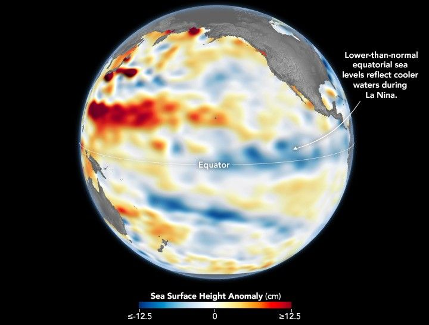

A Subtle Return of La Niña
After a several-month hiatus, La Niña returned to the equatorial Pacific Ocean in September 2025 and continued into December. However, this occurrence of El Niño’s cooler counterpart is relatively weak, and its influence on weather and climate over the coming months remains uncertain.
Part of the El Niño–Southern Oscillation (ENSO) cycle, La Niña develops when strengthened easterly trade winds intensify the upwelling of cold, deep water in the eastern tropical Pacific. This process cools large swaths of the eastern and central equatorial Pacific while pushing warm surface waters westward toward Asia and Australia. In a report published on December 11, the NOAA Climate Prediction Center confirmed that below-average sea surface temperatures associated with La Niña conditions were present and likely to persist for another month or two.
Shifting wind patterns and changes in ocean heat distribution have a direct effect on sea level. Because cooler water is denser and occupies less volume than warm water, sea levels in the central and eastern Pacific tend to drop during La Niña events. The map above shows sea surface height observed on December 1, 2025. Shades of blue indicate below-normal sea levels, shades of red show above-normal levels, and white represents near-normal conditions.
Data for the map were acquired by the Sentinel-6 Michael Freilich satellite and processed by scientists at NASA’s Jet Propulsion Laboratory (JPL). Signals related to seasonal cycles and long-term trends were removed to highlight sea level changes associated with ENSO and other short-term natural phenomena. The satellite’s twin successor, Sentinel-6B, launched in November 2025 and is expected to begin contributing to ENSO research and forecasts in 2026.
Cooling of equatorial surface waters alters the exchange of heat and moisture between the ocean and atmosphere, reshaping global atmospheric circulation. La Niña’s coupling of ocean and atmosphere can shift mid-latitude jet streams, intensifying rainfall in some regions while bringing drought to others.
Typically, La Niña years bring below-average rainfall to the American Southwest and above-average rainfall to the Pacific Northwest. But when the event is weak—whether El Niño or La Niña—the associated weather patterns can be “notoriously difficult to predict,” said Josh Willis, an oceanographer and Sentinel-6 Michael Freilich project scientist at JPL in Southern California.
“It still has the potential to tilt our winter toward the dry side in the American Southwest,” Willis said. “But it’s never a guarantee, especially with a mild event like this one.”